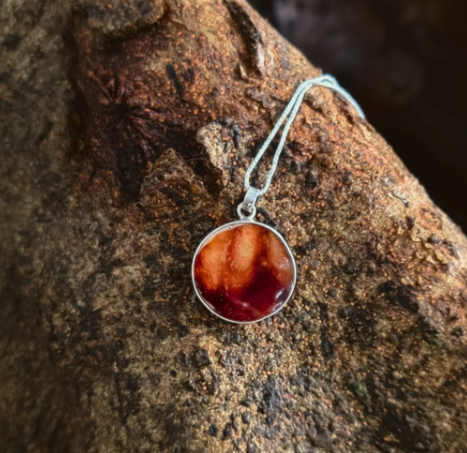

Educação Perinatal
Aqui você escreve toda a explicação detalhada sobre a Educação Perinatal. Explique como funciona, os temas abordados nas consultas e a importância desse preparo para a gestante e sua família.
← Voltar aos ServiçosConheça detalhadamente como posso te apoiar nessa jornada.
Aqui você escreve toda a explicação detalhada sobre a Educação Perinatal. Explique como funciona, os temas abordados nas consultas e a importância desse preparo para a gestante e sua família.
← Voltar aos Serviços
Descrição detalhada sobre o apoio contínuo durante o trabalho de parto e parto. Medidas naturais de alívio da dor, suporte emocional e físico para uma experiência respeitosa e segura.
← Voltar aos Serviços
Explicação sobre os benefícios da placentofagia, o processo seguro de desidratação e encapsulamento, e como auxilia no pós-parto.
← Voltar aos Serviços
Orientações práticas de pós-parto, primeiros cuidados com o recém-nascido, banho, sono e apoio na amamentação.
← Voltar aos Serviços
Uma forma linda e eterna de eternizar o vínculo. Detalhes sobre como são feitas as joias artesanais usando recordações da sua gestação.
← Voltar aos Serviços
Pintura na barriga, carimbo da placenta (árvore da vida) e outras formas artísticas e afetivas de celebrar o final da gestação.
← Voltar aos Serviços